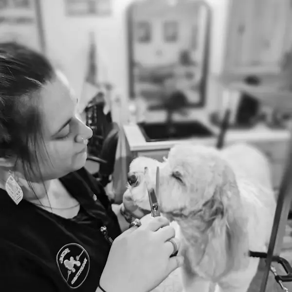
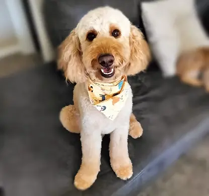
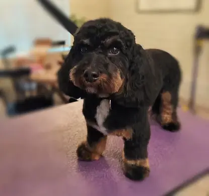
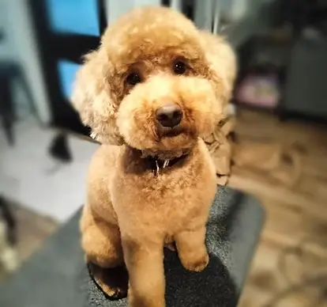
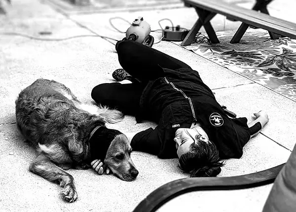
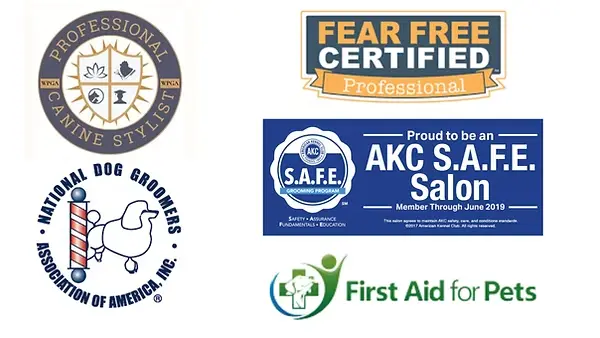
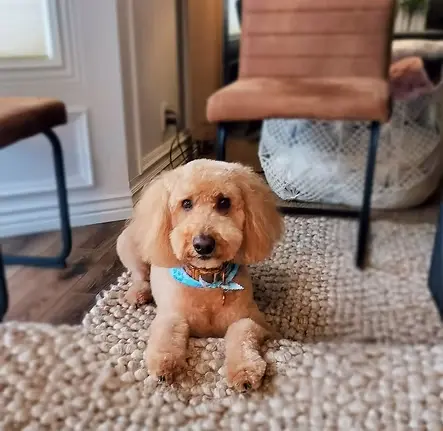
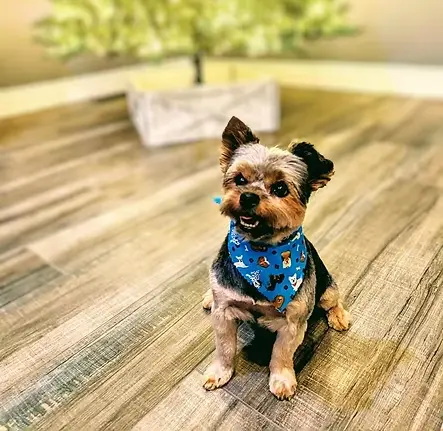
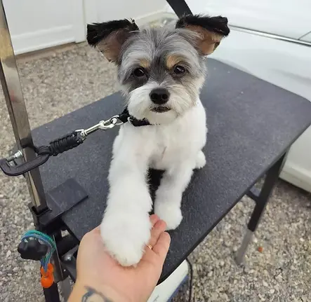

We Come to You
Your dog stays in a familiar environment while professional grooming comes directly to your home.
House-Call Dog Grooming
Professional grooming and cooperative care brought into the comfort of home, with an approach centered on patience, safety, and your dog's individual needs.

A Different Kind of Grooming
Trainquil Effects brings professional grooming directly into your home. Instead of traveling in a grooming van, services are performed using an appropriate space and bathing area in your home.
Your dog stays in a familiar environment while professional grooming comes directly to your home.
Grooming is approached with your dog's comfort, behavior, and individual needs in mind.
Patient handling and behavior-conscious techniques help create a safer, more comfortable grooming experience.
Grooming Services
Services are designed around the individual dog rather than a one-size-fits-all grooming experience.

Full Grooming
Complete grooming care for dogs needing both their regular wellness bath and a professional haircut.
Learn More
Routine Care
Professional bathing and grooming care for dogs whose coats do not require a full haircut.
Learn More
Between Appointments
Maintenance care helps keep your dog comfortable and their coat manageable between complete grooms.
Learn More
The Trainquil Difference
Grooming is more than a finished haircut. Trainquil Effects combines professional grooming education with an understanding of canine behavior to create an experience focused on both physical care and emotional comfort.
Meet Your Groomer
Gabrielle brings together professional grooming education, continuing education in canine behavior, and a genuine commitment to helping dogs feel safer throughout the grooming process.

Education Matters
Professional grooming, behavior education, Fear Free training, pet first aid, and continuing education help support a thoughtful approach to every appointment.
View Qualifications
Recent Grooms
Every dog is different. Explore real Trainquil Effects clients, coat types, breeds, and finished grooms.




Client Experiences
She is amazing! She was very patient with our nervous pup and took the time to help her feel comfortable.
Kathryn Hilker
Gabby is very knowledgeable and professional. She made sure our dog was comfortable and reassured throughout the grooming process.
Jessica Crane
We appreciate the patience, care, and knowledge she brings to grooming. It makes such a difference for our dog.
Jessica Tyger
Frequently Asked Questions
Here are a few of the questions clients commonly have about bringing professional grooming into their home.
Learn More About House-Call GroomingNo. Trainquil Effects is a house-call grooming service. Grooming takes place at your home rather than inside a grooming van.
Trainquil Effects uses an appropriate bathing area in your home, such as a shower or sink, depending on your dog and the available space.
Cooperative care and behavior-conscious handling are central to the Trainquil Effects approach. Grooming is adapted to the individual dog's needs with an emphasis on comfort and safety.
Pricing can vary based on factors including breed, coat type and condition, and the amount of time since your dog's previous groom. Contact Trainquil Effects for information specific to your dog.
A Calmer Grooming Experience
Tell us a little about your dog and their grooming needs to get started with Trainquil Effects.